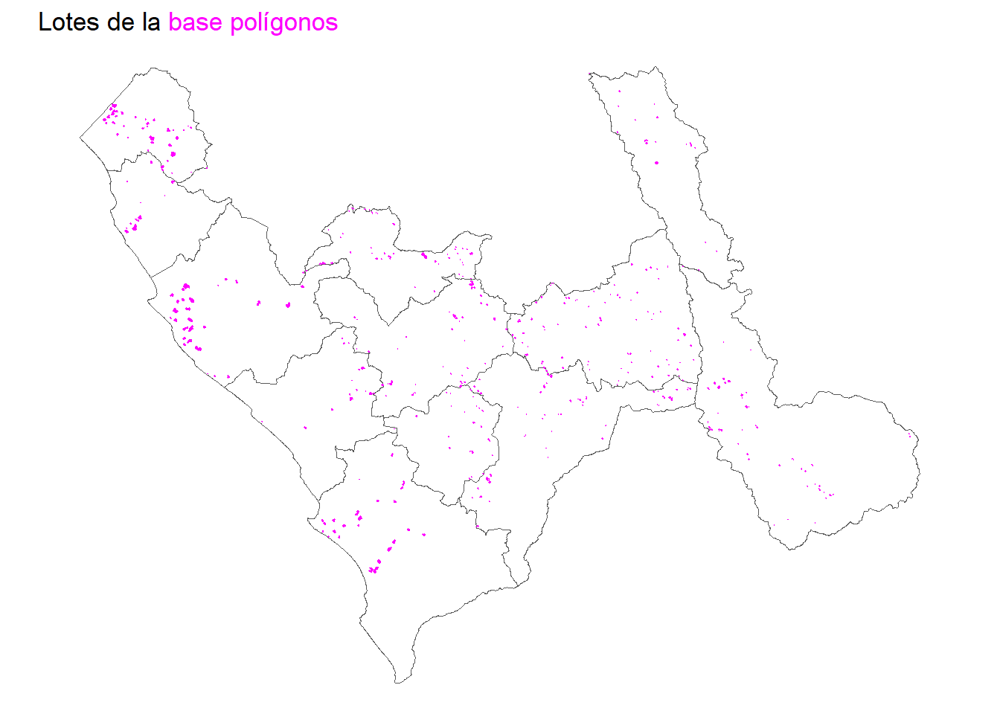
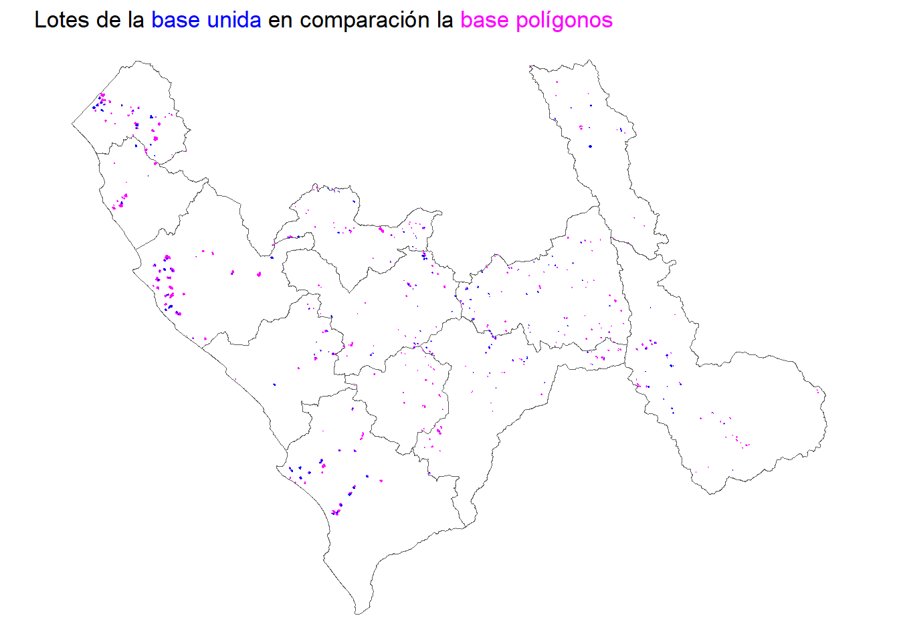
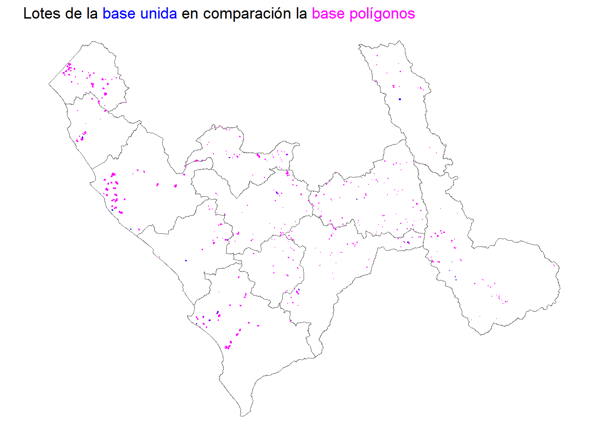

Revisión base CAPITULO_4A
Objetivo
Realizar la unión de la selección base polígonos QLAB_MIDAGRI_1.gdb (lotesm 1) y la base tabular CAPITULO_4A.xlsx .
Revisión base polígonos
La base polígonos tiene 1903 observaciones y 27 variables.
Esta base solo incluye los cultivos de interés: papa, maíz, palto (palta), espárrago y caña de azúcar.
La unidad de análisis en esta base son los lotes de cada parcela a la fecha noviembre 2021.
| uso_lt1 | Nro de casos en data |
|---|---|
| Papa | 741 |
| Maíz | 444 |
| Palto | 327 |
| Esparrago | 252 |
| Caña de azucar | 139 |
| Total | 1903 |
En un mapa se pueden graficar de la siguiente manera.

Revisión base tabular
La base tabular tiene 9916 observaciones y 179 variables.
Se encuentran 56 casos duplicados en esta base de datos los cuales se filtrarán.
De esta base solo seleccionaremos los cultivos de interés. Aplicando la selección, el número de observaciones se reduce a 3763.
La unidad de análisis de la base tabular son los lotes de cada parcela en distintos momentos, por ello se incluye una variable que especifica si la información es acerca del pasado, presente o futuro.
| P402_PADRE | PASADO | PRESENTE | FUTURO | Total |
|---|---|---|---|---|
| PAPA | 754 | 709 | 169 | 1632 |
| MAIZ AMARILLO | 416 | 240 | 92 | 748 |
| MAIZ AMILACEO | 262 | 141 | 86 | 489 |
| PALTA | 3 | 346 | 15 | 364 |
| CAÑA DE AZÚCAR (PARA AZUCAR) | 54 | 119 | 13 | 186 |
| ESPÁRRAGO | 10 | 152 | 12 | 174 |
| MAIZ MORADO | 39 | 23 | 3 | 65 |
| MAIZ CHALA | 35 | 12 | 8 | 55 |
| MAIZ CHOCLO | 12 | 13 | 1 | 26 |
| CAÑA DE AZÚCAR (PARA FRUTA) | 6 | 8 | 2 | 16 |
| CAÑA DE AZÚCAR (PARA ALCOHOL) | 3 | 3 | 0 | 6 |
| CAÑA DE AZÚCAR (PARA CHANCACA) | 1 | 0 | 1 | 2 |
| Total | 1595 | 1766 | 402 | 3763 |
Respecto a la antigüedad de los datos presentes en la base tabular tenemos que el año más antiguo en la selección data de 1965.
| P403_ANIO | n |
|---|---|
| [1965,2020) | 767 |
| 2020 | 1091 |
| 2021 | 1846 |
| 2022 | 59 |
| Total | 3763 |
Unión de las bases
Al momento de unir las bases, es oportuno considerar que la base polígonos tiene la información sobre los lotes en el presente (nov 2021) y la base tabular tiene información sobre los lotes en el pasado, presente y futuro. Asimismo, se tienen las siguientes observaciones:
No todas las observaciones de la base polígonos fueron encontradas en la base tabular, 282 casos no se unieron. Sin embargo, se preservarán estos casos y se considerarán como cultivos en el PRESENTE, en el mes de noviembre, 2021.
No todas las observaciones de la base tabular fueron encontradas en la base tabular, 1638 casos no se unieron. Estos casos no se preservarán.
Los casos que se unieron satisfactoriamente en la base tabular fueron 2125 observaciones. Sumado a los 282 casos sobrantes de la base poligonal tenemos un total de 2407 observaciones en la base final unida.
De los 2407 casos se tiene lo siguiente:
| P401 | n |
|---|---|
| FUTURO | 47 |
| PASADO | 520 |
| PRESENTE | 1840 |
| Total | 2407 |
La Tabla 4 muestra que se tiene 1840 observaciones en el presente, lo cual es un 76% de las observaciones totales de la base unida. Asimismo, si quisiéramos saber cuáles son los casos que tienen máximo una antigüedad de tres meses desde que se realizó la encuesta, es decir considerar casos hasta setiembre de 2021, tendríamos lo siguiente:
| P403_ANIO | No reciente | Reciente | Total |
|---|---|---|---|
| [1965,2021) | 922 | 0 | 922 |
| 2021 | 785 | 686 | 1471 |
| 2022 | 0 | 14 | 14 |
| Total | 1707 | 700 | 2407 |
En la Tabla 5 podemos observar que la totalidad de valores antes del 2021 son considerados como no recientes. Dentro del 2021, únicamente las observaciones capturadas a partir de setiembre de 2021 son consideradas como recientes lo que nos da un total de 686 observaciones. Las observaciones que se encuentran en 2022, o en el futuro de la encuesta, son también consideradas como recientes, es decir, 14 observaciones.
Si graficamos la base unida según temporalidad podemos ver lo siguiente en comparación con la base polígono original:

